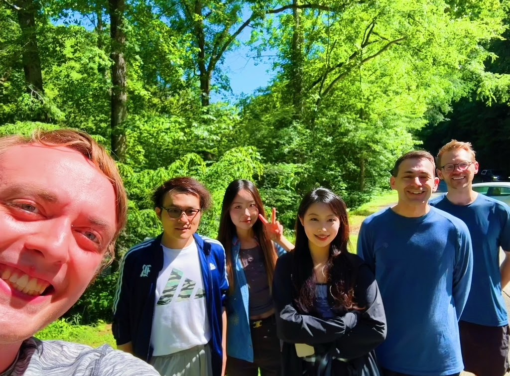
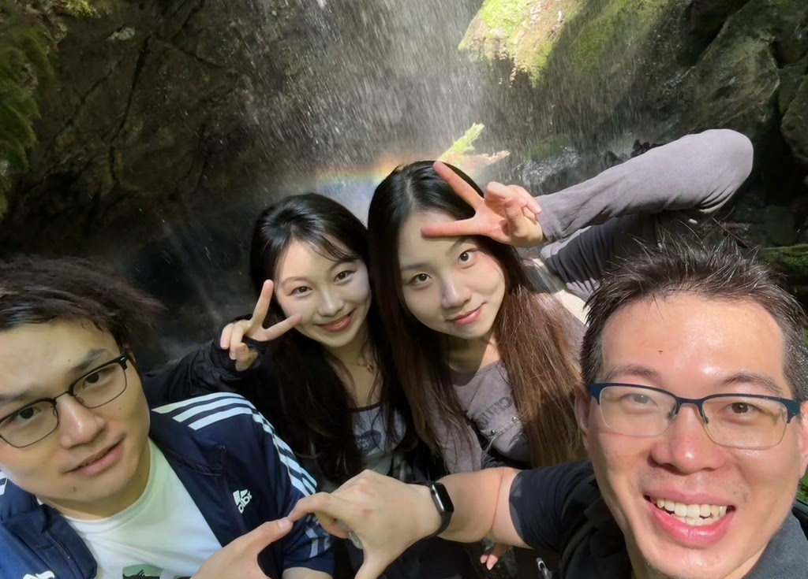
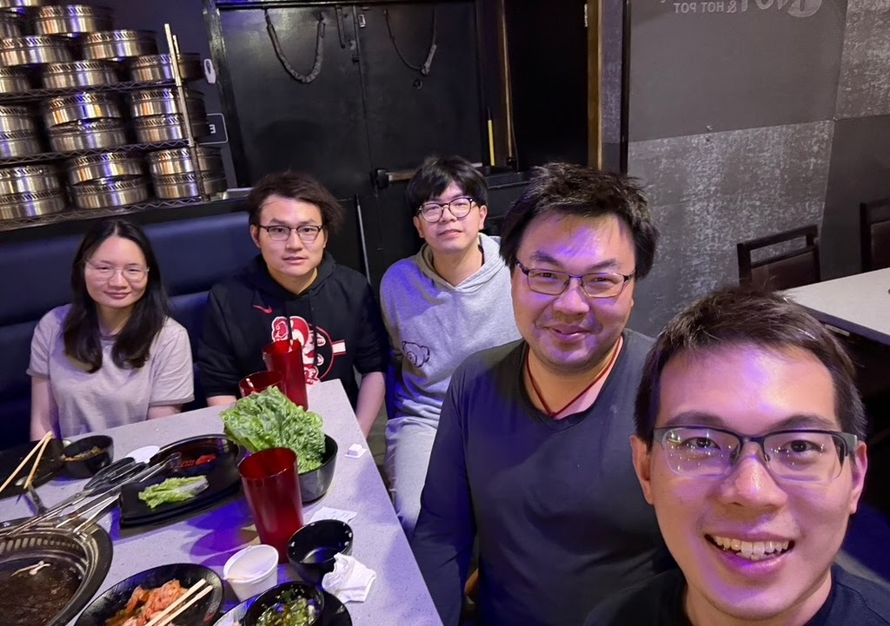
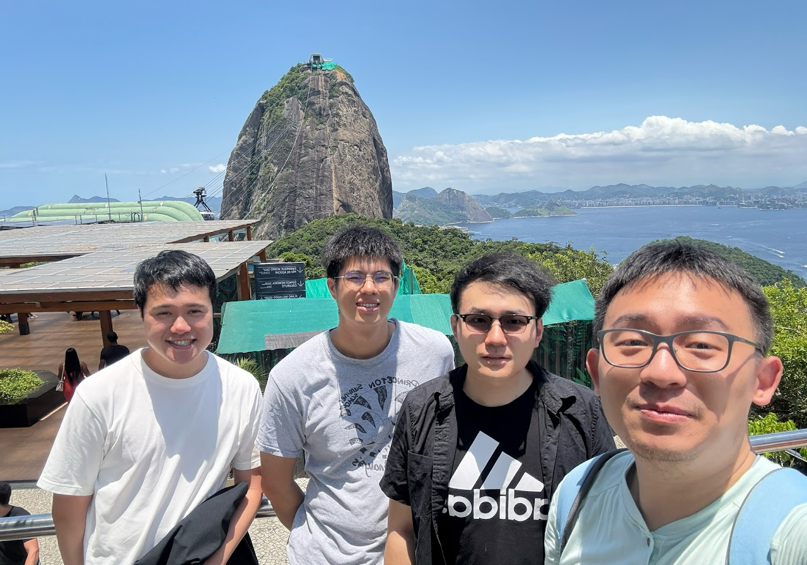

PEOPLE & PLACES
Photos.
A few favorite moments from travels and gatherings with mathematicians and friends.



Great Smoky Mountains
Hiking in the Great Smoky Mountains.

Rainbow Falls
With Shuxian Song, Jia Wan, and Zhihao Mu at Rainbow Falls.

The Great Wall
Hiking the Great Wall with Xiaolong Hans Han, Chris Leininger, and Le Kuai.

Korean barbecue
Dinner with Beibei Liu, Changqian Li, Jingyin Huang, and Zhihao Mu.

Sugarloaf Mountain
With Ricky Lee, Yi Wang, and Yushan Jiang in front of Sugarloaf Mountain.